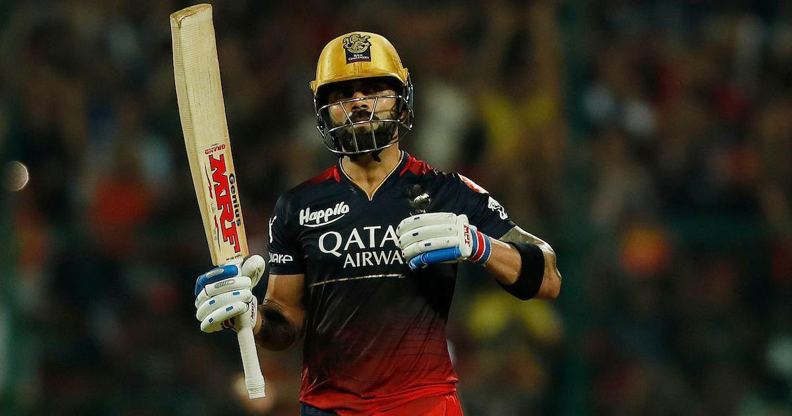

" A captain who led with grace, an icon who played with fire, and a legend who defined cricket's desire".
Virat Kohli is an Indian international cricketer and the former captain of the Indian national cricket team. He currently represents Royal Challengers Bangalore in the IPL and Delhi in domestic cricket. Kohli is widely regarded as one of the greatest batsmen in the history of the sport, and the best of this era.[3] He is the highest run scorer in T20I and IPL. In 2020, the International Cricket Council named him the male cricketer of the decade. Kohli is currently fourth-highest run-scorer in international cricket and stands second in the list of most international centuries scored. He also holds the record for scoring the most centuries in One Day International cricket.[4][5] Kohli was a member of the Indian team that won the 2011 Cricket World Cup and 2013 ICC Champions Trophy.
ABOUT
Virat Kohli,Virat Kohli, born on November 5, 1988, stands as a cricketing icon renowned for his aggressive playing style and unparalleled batting prowess. A former captain of the Indian national team, Kohli's unwavering dedication to the sport has earned him the status of a cricketing legend. His remarkable achievements include being the fastest player to reach multiple run milestones in One Day Internationals (ODIs), receiving consecutive ICC Cricketer of the Year awards in 2017 and 2018, and leading the Indian team with passion and commitment. Kohli's impact extends beyond the cricket pitch, inspiring aspiring players globally and solidifying his place as one of the greatest cricketers of all time.
The Run Machine
IPL
Virat Kohli's indomitable presence in the Indian Premier League (IPL) has been nothing short of spectacular. As the long-standing captain of the Royal Challengers Bangalore (RCB), Kohli has showcased his exemplary leadership skills and extraordinary batting talent season after season. His captaincy has steered RCB to numerous thrilling encounters, and his consistent run-scoring has made him one of the tournament's all-time leading batsmen.
WORLD CUP

Virat Kohli, a stalwart in international cricket, brings unparalleled intensity to the World Cup stage.His strategic acumen and batting prowess have been pivotal in crucial World Cup encounters. Renowned for his chase-master abilities, Kohli has consistently delivered under pressure, contributing significantly to India's campaigns. his performances in World Cups remain a testament to his enduring impact on the grandest stage of limited-overs cricket.
PERSONAL LIFE

Virat Kohli's personal life is marked by his marriage to Bollywood actress Anushka Sharma, creating one of India's most celebrated power couples. The duo tied the knot in a private ceremony in 2017, capturing the nation's attention. In 2021, they welcomed their daughter, Vamika, adding to the joy of their family. Known for maintaining a relatively private personal life, Kohli and Sharma's relationship is often admired for its balance of fame, success, and cherished family life alongside his successful cricket career.